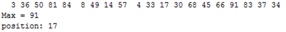
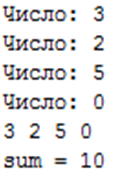
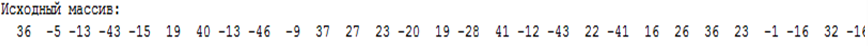
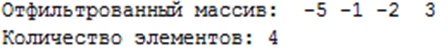
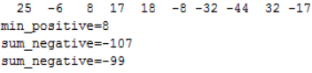

Пример результата:
9 5 4 22 23 7 3 16 16 8 Минимальный элемент массива A[7]=3
Задача 2
Дан массив из 10 целочисленных элементов. Найти количество отрицательных и вывести количество на экран.Пример результата:
3 4 6 -1 6 -2 1 5 0 1 Количество отрицательных элементов: 2
Задача 3
Дан целочисленный массив размера N=10. Вывести все содержащиеся в данном массиве четные числа в порядке убывания их индексов, а также их количество K.N=4 mas: 8 9 2 5 >>> 2 8 количество = 2
Задача 4
Дан массив из 10 целочисленных элементов, найти в нем два максимальных элемента и их номера.Пример:
Исходный массив: 4 -5 10 -10 5 8 11 4 -1 5 максимальные A[3]=10, A[5]=5
Задача 5
Дан массив из 10 целочисленных элементов заполненый числами в интервале [-10..10] и выполнить циклический сдвиг влево без первого элемента.Пример:
Исходный массив: 4 -5 3 10 -4 -6 8 -10 1 0 Результат: 4 3 10 -4 -6 8 -10 1 0 -5
Задача 6
Дан массив из 10 целочисленных элементов заполненый случайными числами в интервале [-10..10] и сделать реверс всех элементов, кроме последнего.Пример:
Исходный массив: -5 3 10 -4 -6 8 -10 1 0 4 Результат: 0 1 -10 8 -6 -4 10 3 -5 4
Задача 7
Дан массив из 10 целочисленных элементов заполненый в интервале [20,100] и записать в другой массив все числа, которые оканчиваются на 0.Пример:
Исходный массив: 40 57 30 71 84 40 22 33 10 16 Заканчиваются на 0: 40 30 40 10
Задача 8 Дан массив из 10 целочисленных элементов заполненный в интервале [20,100] Разделить элементы массива на максимальный
Задача 9
Дан массив из 10 целочисленных элементов
заполненный в интервале [20,100] Найти разность между максимальным и минимальным элементами
массива
Задача 10
Дан массив из 10 целочисленных элементов
заполненный в интервале [20,100] Поменять местами минимальный и максимальный элементы массива
Задача 11
Дан массив из 10 целочисленных элементов
заполненный в интервале [-
20,100]Количества отрицательных и положительных элементов в массиве
Задача 12
Заполнить массив из 10 элементов случайными числами в интервале [0..50] и отсортировать его по возрастанию суммы цифрПример: Исходный массив: 14 25 13 12 76 58 21 87 10 98 Результат: 10 21 12 13 14 25 76 58 87 98
Задача 13
Найти максимальный элемент численного массива и его индекс.Результат:

Задача 14 Требуется заполнить массив числами, которые вводит пользователь, и вычислить их сумму. Если пользователь вводит ноль или превышен размер массива, то запросы на ввод должны прекратиться. Использовать цикл с постусловием (repeat)
Результат:

Задача 15 Дан массив из 50 элементов, значения которых формируются функцией random и лежат в диапазоне от -50 до 49 включительно. Требуется из одного массива скопировать в другой массив значения в диапазоне от -5 до 5 включительно и подсчитать их количество.


Задача 16 В одномерном массиве (заполнение массива случайными числами от -50 до 49) найти сумму отрицательных элементов. Если эта сумма меньше -100, то необходимо прибавить к ней минимальный положительный элемент.

Задача 17 В одномерном массиве (заполнение массива случайными числами от -50 до 49) найти сумму отрицательных элементов. Если эта сумма меньше -100, то необходимо прибавить к ней минимальный положительный элемент.
Результат:
101 245 167 295 133 >>> 101(2) 167(14) 295(16)
Задача 18 Заполнить массив из 10 элементов случайными числами в интервале [0..4] и определить, есть ли в нем одинаковые соседние элементы.
Пример:
Исходный массив:
4 0 1 2 0 1 3 1 1 0
Ответ: есть
Задача 19 Заполнить массив из 10 элементов случайными
числами в интервале [-10..10] и сделать реверс отдельно для 1-ой
и 2-ой половин массива.
Пример:


Задача 20. Заполнить массив из 12 элементов случайными числами в интервале [-12..12] и выполнить циклический сдвиг ВПРАВО на 4 элемента.
Пример:

Задача 21 Определить индексы элементов массива, значение которых лежит в указанном пределе
Задача 22 Дан массив из 10 целочисленных элементов заполненный в интервале [20,100] Удалить повторяющиеся элементы из массива результат в новый массив
Задача 23 Найти два максимальных элемента массива
Задача 24 Разделить элементы массива на максимальный
Задача 25 Дан массив из 10 целочисленных элементов заполненный в интервале [20,100] Найти разность между максимальным и минимальным элементами массива
Задача 26 Поменять местами минимальный и максимальный элементы массива
Задача 27 Количества отрицательных и положительных элементов в массиве
Задача 28 Удалить повторяющиеся элементы из массива
Задача 29 Сумма положительных элементов массива
Задача 30 Сумма элементов частей массива
Задача 31 Сумма и произведение элементов одномерного массива
Задача 32 Поиск максимального элемента в массиве
Задача 33 Разделить элементы массива на максимальный элемент